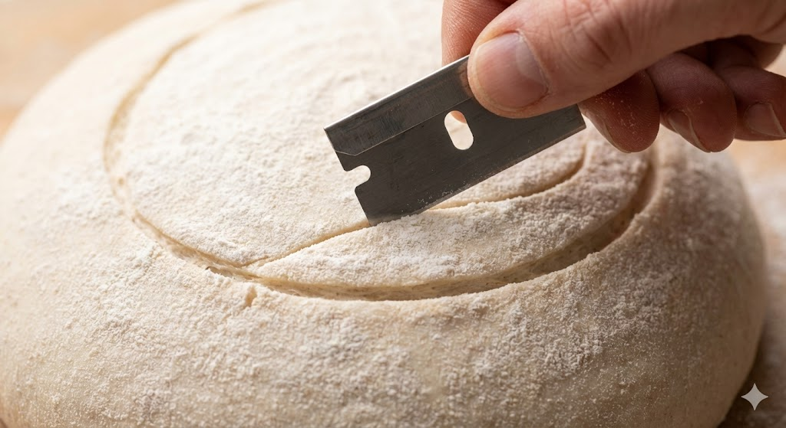

Die großen Laibe
Ein guter Laib Brot ist ein Mikrokosmos. Außen eine schützende, aromareiche Kruste, innen eine weiche, feuchte Krume. Die Herstellung erfordert Zeit, Temperaturkontrolle und das richtige "Wirken".

1. Der Start: Autolyse
Bevor Salz oder Hefe dazu kommen, mischen Profis oft nur Mehl und Wasser und lassen es 20-60 Minuten stehen.
Warum warten?
In dieser Ruhephase quellen die Proteine (Gluten) von selbst auf und bilden erste Stränge. Enzyme beginnen, Stärke in Zucker umzuwandeln.
Das Ergebnis: Man muss später viel kürzer kneten (weniger Oxidation) und der Teig wird dehnbarer und aromatischer.
2. Das Geheimnis Dampf (Schwaden)
Warum glänzt Brot vom Bäcker, aber zu Hause oft nicht? Es liegt am Dampf in den ersten 10 Minuten.
- Ofentrieb: Der Dampf kondensiert auf der kühlen Teighaut. Sie bleibt weich und elastisch. Das Brot kann maximal explodieren ("oven spring"), bevor die Kruste verhärtet.
- Glanz (Dextrine): Die Feuchtigkeit und Hitze verkleistern die Stärke an der Oberfläche zu Dextrinen. Das sorgt für den Glanz.
3. Chemie der Kruste: Maillard
Warum wird Brot braun und warum riecht es so gut? Es ist nicht nur Karamellisierung.
Die Maillard-Reaktion
Ab ca. 140°C reagieren Aminosäuren (Eiweißbausteine) mit reduzierenden Zuckern. Dabei entstehen hunderte neue Geschmacksmoleküle (Röstaromen) und die braune Farbe (Melanoidine). Eine dunkle Kruste ist also nicht verbrannt, sondern Geschmack pur!
4. Der Schnitt (Scoring)
Das Einschneiden der Teighaut ist keine Deko, sondern eine Sollbruchstelle. Ohne Schnitt würde das Brot dort aufreißen, wo die Struktur am schwächsten ist (oft unten an der Seite). Der Schnitt ("Scoring") lenkt die Energie des Ofentriebs kontrolliert nach oben.
